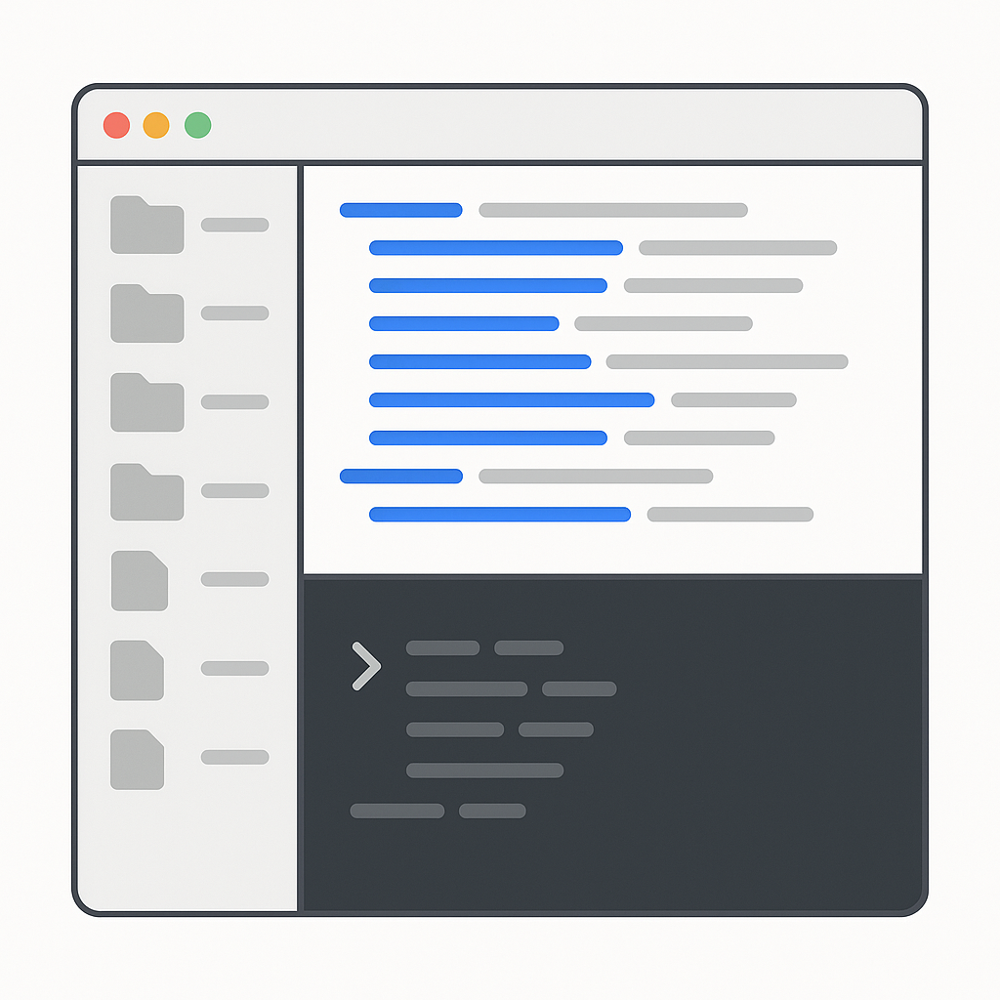

事前にインストールしたVSCodeを起動し、Node.jsとClaude Codeをセットアップします。ターミナルの最低限の操作もここで覚えます。
事前にインストールしたVSCodeを起動してください。VSCode（Visual Studio Code）の中にあるターミナルを使って、研修の作業フォルダを準備します。覚えるコマンドは3つだけです。
code.visualstudio.com からダウンロードしてインストールしてください。設定は初期値のままで進めて問題ありません。日本語化したい方は Ctrl+Shift+X で拡張機能を開き「Japanese」で検索してインストールしてください。
フォルダを移動するコマンドです。「change directory」の略。
今いるフォルダの中身を表示します。Windowsでは dir でも同じです。
新しいフォルダを作ります。「make directory」の略。
PowerShellでは ls も dir も使えます。cd と mkdir はWindows/Mac共通です。
cd Desktop と入力してEntermkdir training と入力してEntercd training と入力してEnterls と入力してEnter（まだ何も表示されないのが正常です）ターミナルの現在ディレクトリが training になっていれば成功です。パスの末尾に Desktop/training と表示されていることを確認してください。うまくいかない方は講師に声をかけてください。
Node.jsはJavaScriptというプログラミング言語をPC上で動かすための環境です。Claude Codeの動作に必要です。
ターミナルで以下を実行してください。
node --version を実行してバージョン番号（v22.x.x など）が表示されていれば成功です。
VSCodeを完全に閉じて再起動してください。それでもダメな場合は、インストール時にPATHの設定が反映されていない可能性があります。講師に声をかけてください。
いよいよClaude Codeをインストールし、研修用の組織アカウントでログインします。
ターミナルに以下のコマンドを貼り付けてEnterを押してください。
「Claude Code has been installed」と表示されたらインストール完了です。次のコマンドで確認してください。
「claude: command not found」と表示される場合は、VSCodeを完全に閉じて再起動してください。再起動後に再度 cd Desktop/training で作業フォルダに戻ることを忘れずに。
ターミナルに表示されるURLをコピーしてブラウザに貼り付けてください。c キーでURLがクリップボードにコピーされます。
ログインに使うアカウント情報やAPIキーは、パスワードと同じ機密情報です。画面共有中にターミナルへAPIキーを入力する場面では、共有を一時停止してください。スクリーンショットを撮る際も、キーやトークンが映り込んでいないか確認する習慣をつけてください。
Claude Codeの入力欄に以下を入力してEnterを押してください。
Claude Codeに「こんにちは」と送り、日本語の応答が返ってくれば成功です。これで環境構築は完了しました。

ファイルツリー エディタ領域 ターミナル（Claude Code）Claude Codeがファイルを作成・編集する際に「Allow」や「Yes」と表示されることがあります。研修中は許可して進めてください。
VSCodeを完全に閉じて再起動してください。それでもダメな場合はPATHの設定が必要です。講師に声をかけてください。
ターミナルに表示されるURLをコピーしてブラウザに貼り付けてください。 c キーでURLがクリップボードにコピーされます。
VSCodeのウィンドウに戻り、数秒待ってください。反映されない場合は Ctrl+C を押してから claude を再実行してください。
インターネット接続を確認してください。Ctrl+C を押してから claude を再実行してください。改善しない場合は講師に声をかけてください。